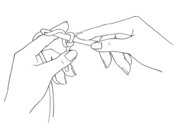
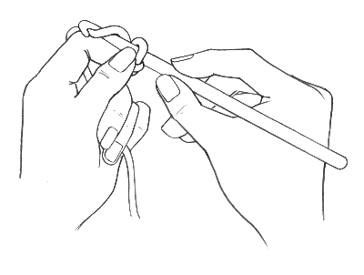

Panjang jarum rajut biasanya berkisar antara 13-15cm. Bagian ujungnya berbentuk seperti
pengait dengan ukuran bervariasi, mulai dari 0,6-10mm.
Jika ingin membuat rajutan yang rapat, rajuters dapat menggunakan jarum yang berukuran lebih
kecil dari standar benang, misalkan rajuters menggunakan benang 5PLY, sebaiknya menggunakan
jarum ukuran 3.5mm.
Sebaliknya, apabila ingin membuat rajutan lebih renggang, gunakan jarum yang ukurannya lebih
besar dari standar benang.
Jarum rajut yang beredar di pasaran biasanya terbuat dari bahan besi, stainless steel,
aluminium dan bambu.
Jarum rajut crochet yang kecil (lace) dengan ukuran di bawah 2mm umumnya menggunakan bahan
stainless steel atau besi yang kuat. Sedangkan yang lebih besar dari 2 mm menggunakan bahan
aluminium karena lebih ringan jika untuk jarum besar.
Jenisnya ada dua, yaitu:
1. Single pointed : memiliki satu kait per jarum, sedangkan double pointed
2. Double pointed : memiliki dua kait dengan ukuran yang berbeda pada tiap ujungnya.
Hakpen tidak dibuat secara khusus untuk digunakan dengan tangan kanan atau tangan
kiri.
Cara memegangnya pun terserah kepada pemakainya, sesuai selera masing-masing.
Namun secara umum orang memegang hakpen dengan cara berikut:
1. Gaya Memegang Pisau

Cara ini biasanya sering digunakan,
- Pegang Hakpen seperti kita memegang pisau.
- Buat ikat simpul sebagai pangkal untuk memulai rajutan,
- Rentangkan dan lilitkan (lilitannya yang longgar ya) benang pada telunjuk/jari tangan
kiri, untuk menghindari benang kusut saat merajut,
- kemudian mulai merajut dengan menggunakan tusuk dasar.
2. Gaya Memegang Pensil

Cara ini hampir mirip cara penggunaannya seperti cara 1, hanya saja kita memegang hakpen
seperti kita memegang pensil atau pena.
Rajuters dapat membeli jarum rajut/hakpendisini